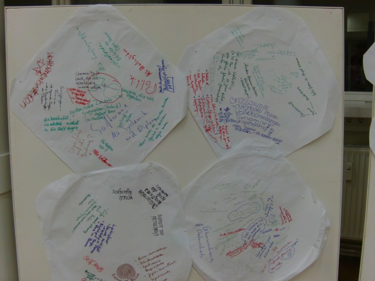
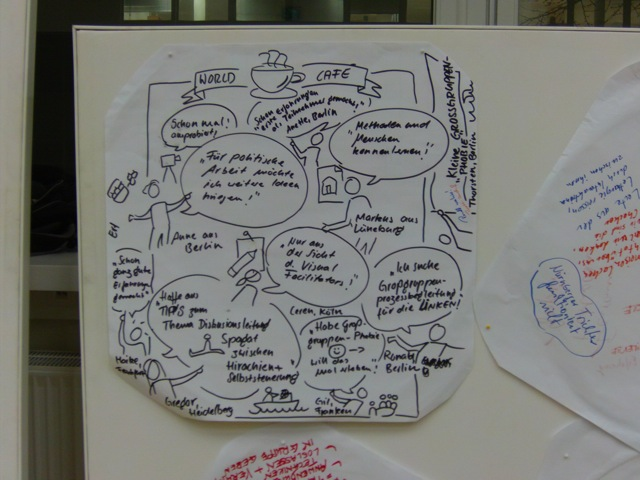

Whew.... Das war jetzt schon etwas anstrengend - aber gleichzeitig auch spannend.
Kurz zum Kontext - heute war der erste Tag des Großgruppen-Moderationstrainings.
Und es hat Spaß gemacht.

Programm heute war recht Kurz und Bündig - Erst ein sehr Kurzer Einführungsvortrag (~10 Minuten) mit den wichtigsten Regeln, dann ein World-Café (auch hier), anschließend eine tiefergehende Einführung in die nächsten zwei Tage und am Schluss eine Stern-Abfrage für den Abschluss.
Das Welt-Café war in diesem Zusammenhang eine schöne Methode um für eine große Gruppe von Menschen (60 Leute) recht schnell einen gewissen Überblick zu erhalten wie die anderen Leute Ticken und was sie so können. Ich habe zum Beispiel herausgefunden dass ich beileibe nicht der einzige war der an Politik und Moderation interessiert war - und dass jede Menge professionelle Moderatoren zu ihrer eigenen Fortbildung anwesend waren. (Das find ich natürlich ein gutes Zeichen!). Kurz zum Café - es waren kleine Café-Tische aufgestellt - so viele dass pro Tisch etwa vier Leute Platz hatten. Von den drei Runden waren die ersten Beiden für den Hintergrund und was einen zu dem Training bringt reserviert, während es in der dritten um die Wünsche an das Training ging. Das Nette bei dieser Methode: Dadurch dass man jederzeit auf die Tischdecke schreiben und Malen konnte und sollte waren am Schluss alle Tischdecken ein Stück Dokumentation was besprochen wurde. Sehr schön. Etwas anstrengend war es die ganze Zeit zu stehen - aber hey, das war es wert. Nach dem Vortrag der Veranstalter gab es dann noch eine konventionelle Kartenabfrage und eine Themensammlung (aus der dritten Runde des World-Cafés) - die aber größtenteils von den Moderatoren vorgegeben wurde.
Schön fand ich dabei dass die grenzen von ungenügenden Moderations-methoden hier sehr schön und interaktiv gezeigt wurden (ich bin mir immer noch nicht ganz sicher ob das Absicht war). So war die Schrift auf den Moderationskarten und diese selbst zu klein, die Fragen aus dem Publikum konnte nicht jeder Hören, die Mikrofonverstärkten Stimmen so laut dass es keinen Spaß machte, aber ohne Mikro wiederum so leise dass es auch keinen Spaß machte...
 Am Schluss war noch eine schöne Technik, deren Name ich aber leider nicht verstanden hatte (naja, soll ja noch eine ausführliche Dokumentation geben). Stern- oder Mandala-Abfrage hatte ich verstanden - dazu spuckt Google aber nichts aus. Ah well. Funktionieren tut es so dass sich alle im Kreis aufstellen und jeder der etwas Sagen will (nacheinander!) in die Mitte geht und es sagt. Dann kann jeder, der will, so weit auf den Menschen in der Mitte zugehen wie er ihm Zustimmt. Dass erfordert Mut - macht aber auch Spaß und sorgt angeblich dafür dass nur wichtige Sachen angesprochen werden. Jeder der Möchte kommt zu Wort, niemand muss sagen "find ich auch" oder "ist schon alles gesagt worden". Ach ja, und sobald die Gruppe genug hat, sagt sie dass auch sehr deutlich - eine schöne und schnelle Art Schluss zu machen und das wichtigste Feedback aufzugreifen.